CSE 555 (Computational Photography) Project 1
High-Dynamic Range Imaging and Tone Mapping
Mark Heimann & Jing Dao Chen 2/9/2015
Overview
The aim of the project is to
Calculation of 𝛌 parameter
The effect of the 𝛌 parameter on determining the smoothness of the response curve often varies from image to image.The following shows the effect of increasing 𝛌 from 1 to 1000, multiplying by 10 each time, for different data sets.
Stanford memorial church
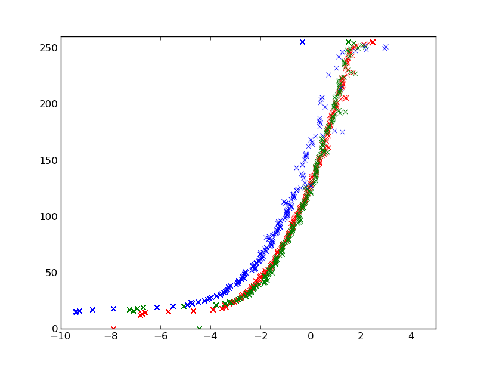 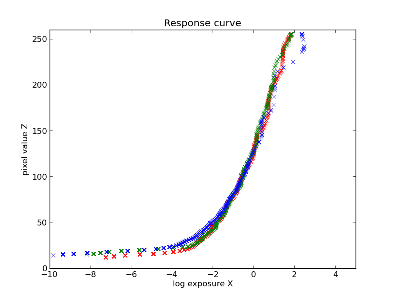 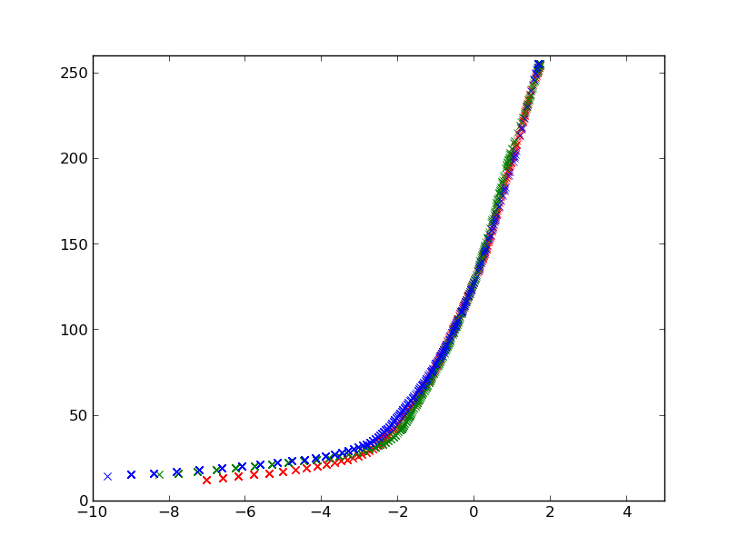 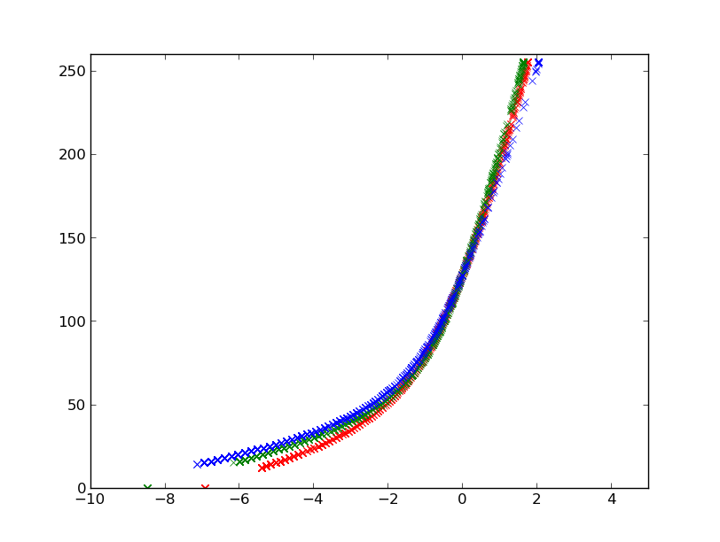
{kind=link}
{kind=link}
{kind=link}
{kind=link}
St Louis Arch
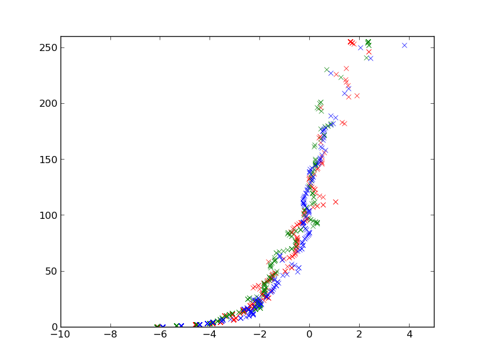 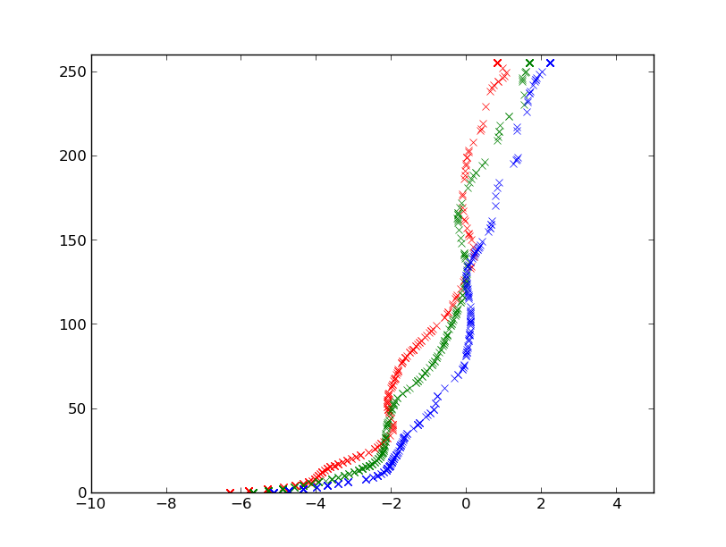 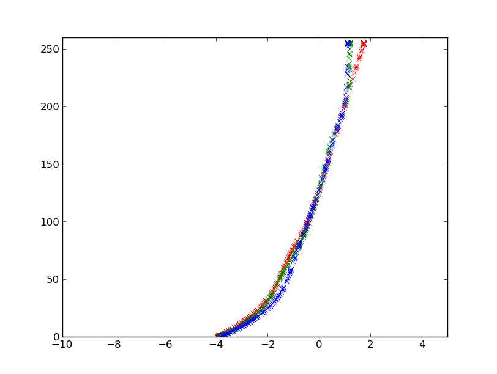 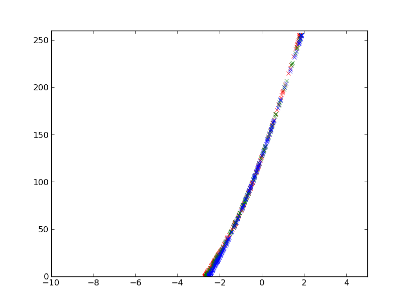
{kind=link}
{kind=link}
{kind=link}
{kind=link}
Trees
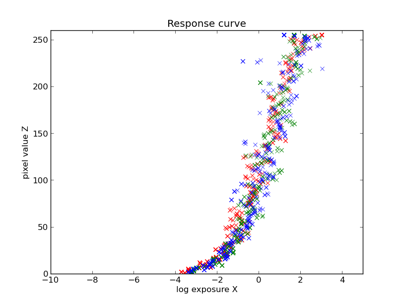 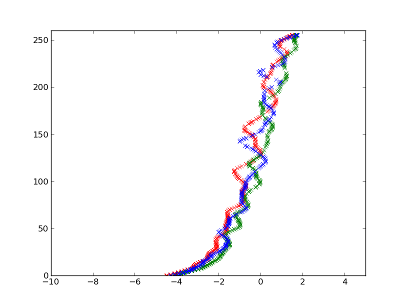 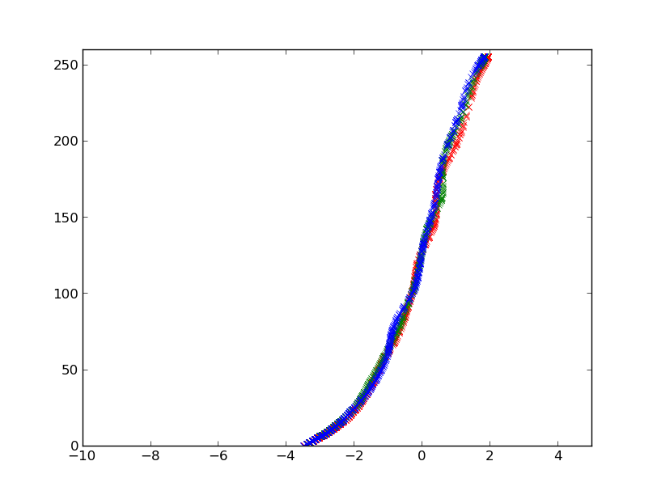 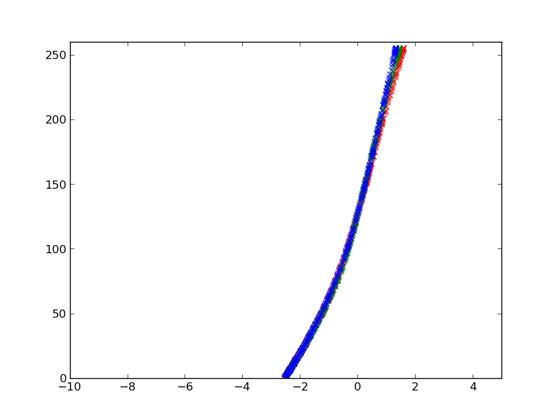
{kind=link}
{kind=link}
{kind=link}
{kind=link}
Here we develop a robust method in the setting of the 𝛌 parameter to account for variation of image dimensions and image noise.
𝛌 = c × N × w × h
Stanford memorial church ( 𝛌 = 33 )
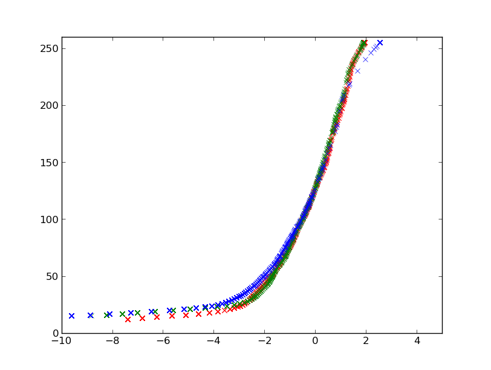
{kind=link}
St Louis Arch ( 𝛌 = 136 )
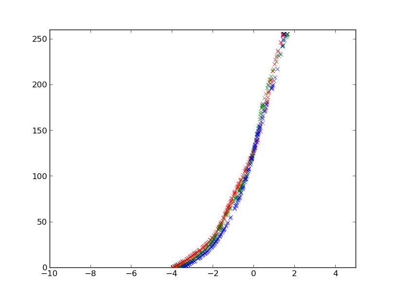
{kind=link}
Trees ( 𝛌 = 168 )
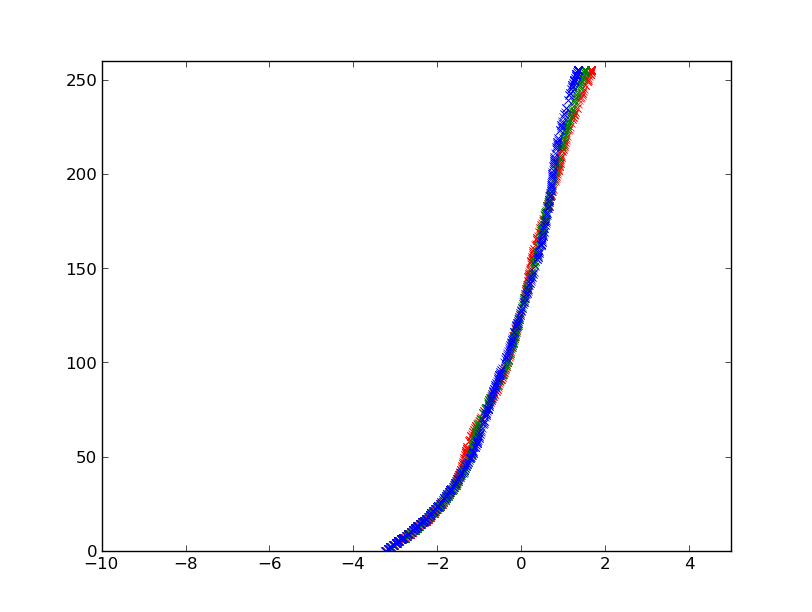
{kind=link}
Procedure:
Challenges:
Calculation:
distance to subject at minimum zoom, d1 = 0.65m
distance to subject at maximum zoom, d2 = 1.40m